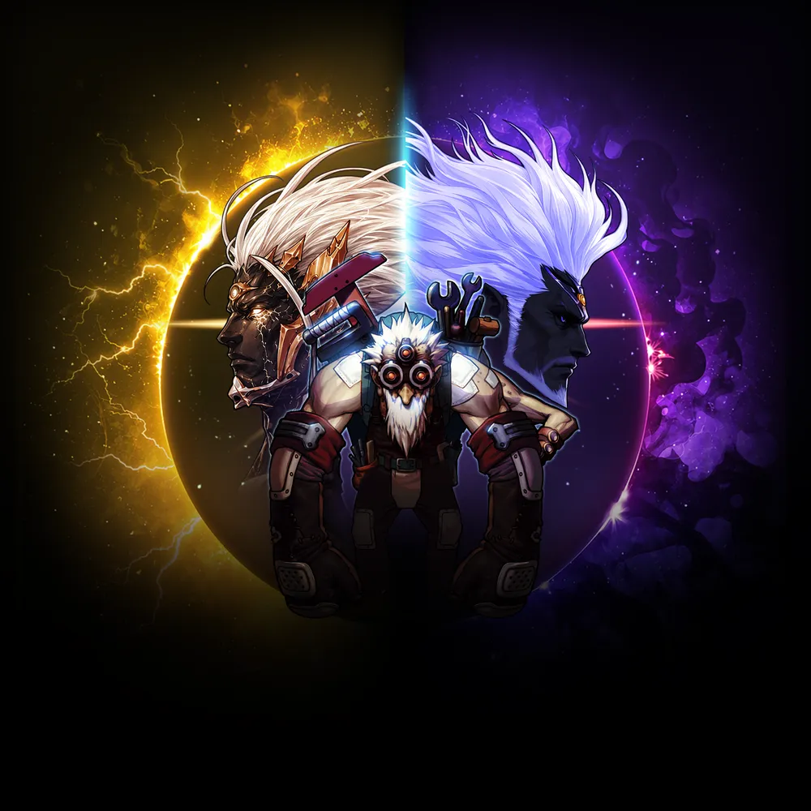
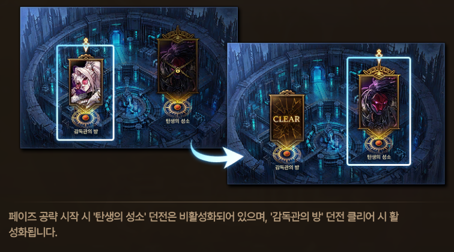
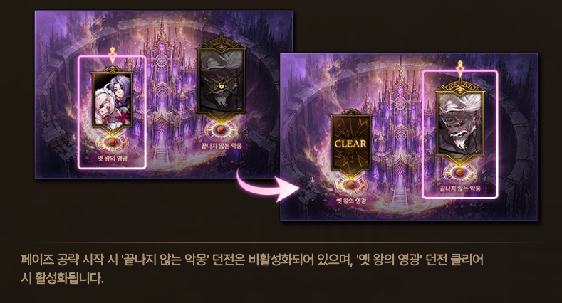
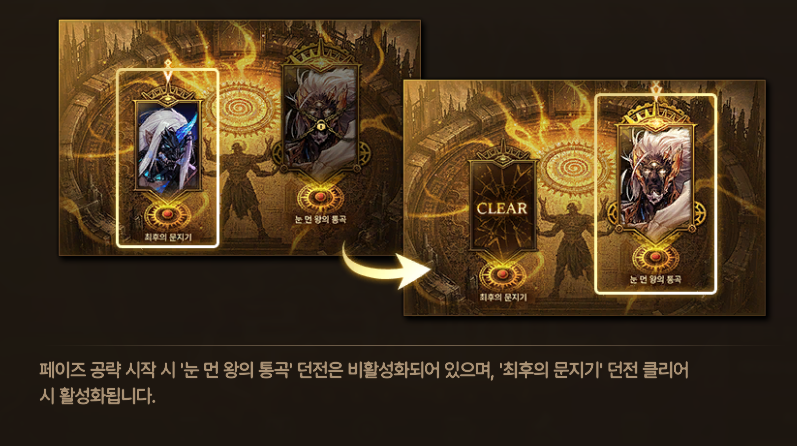

원작의 정체성
루크의 세계관과 상징적인 보스, 기믹을 계승한다.
01 / CONTENT STUDY
PC 원작의 대규모 레이드는
모바일에서 어떻게 재설계되었는가?

전투 공략법이 아니라 콘텐츠의 설계 선택과 그 효과를 분석한다.
원작의 레이드 정체성을 유지하면서도, 모바일 환경에 맞는 가벼운 진행·직접적인 전투·선택 가능한 성장을 어떻게 구현했는가?
루크의 세계관과 상징적인 보스, 기믹을 계승한다.
대규모 공격대 운영을 간결한 소규모 진행으로 압축한다.
핵심 성장 보상은 공유하고, 협동에는 추가적 보상 가치를 제공한다.
분석 원칙 · 공식 발표에 근거한 사실, 사용자 제공 인게임 정보, 역기획적 추론을 분리해 표기한다.
적은 인원으로 참여할 수 있지만 레이드의 핵심 구조는 유지한다.
주요 공략 패턴은 공통이며, 인원과 난이도에 따라 전투 수치가 달라지는 구조.
출처 · 2026.09.10 공식 개발자 노트, 사용자 제공 플레이 정보.
하나의 공격대가 선행 던전을 클리어하면 다음 던전이 해금된다.



복수 파티의 병렬 진행이 아닌 단일 경로의 순차 해금으로, 다음 목표를 명확하게 파악할 수 있도록 구성했다.
이미지 · 사용자 제공 페이즈 진행 자료. 해석은 역기획 가설.
원작을 단순 축소한 것이 아니라 중심이 되는 플레이 경험을 재배치했다.
공격대 운영 부담은 줄이고 보스 전투에 대한 집중도를 높이는 방향으로 구조를 재구성했다.
대표 사례만 활용해 모바일 전투 설계의 방향성을 확인한다.
PC 원작의 분신 제어 중심 대응에서 모바일의 관찰·선택형 기믹으로 재해석한 사례.
두 보스의 연계 공격을 서로에게 유도해 상황을 유리하게 바꾸는 전투 경험.
보스별 패턴의 상세 수치·프레임·연출은 별도 검증 범위. 위 설명은 대표 메커니즘에 한정한다.
싱글과 파티 선택에서 가장 중요한 것은 기본 성장 기회의 차별을 줄인 점이다.
주간 모놀리움 기본 보상
경매 주화 조각 4개조각 10개 → 경매 주화 1개주간 모놀리움 기본 보상
경매 주화 1개부가 보상 효율 차별화싱글·파티 모두 동일한 모놀리움 기본 획득량
파티 경매 주화 우위, 카드·거래 가능 보상 기대
레이드 클리어와 경매 참여 시점 분리
모놀리움·주화의 정확한 수량은 사용자 제공 인게임 관찰. 공식 방향: 2026.09.10 개발자 노트.
이전 장비의 가치를 계승하면서 단계별 업그레이드 목표를 제시한다.
※ 전체 240개 확보에 필요한 횟수는 매회 20개라면 12회, 매회 18개라도 14회. 추가 드랍·경매·이벤트·골드 확보 시간은 제외.
확정 성장 재료를 누적하는 안정성에, 희귀 완성 무기 드랍 등 성장 가속의 기대감을 결합했다.
재료 수급은 주간 레이드뿐 아니라 일일 파밍, 경매, 운영 이벤트로 확장된다.
일반 파밍 던전에서 확률적으로 등장하여 에픽 장비 1개와 모놀리움 획득 기회를 제공.
레이드에서 완성 무기가 확률적으로 등장. 해체하면 모놀리움 30개 획득.
경매 물품에 모놀리움 1~3개 상자가 등장하며, 별도로 캐릭터 귀속 모놀리움 1개가 등장하는 경우도 있음.
2026.10.22 – 11.26
‘레이드 깨줄게’ 캐릭터의 주간 클리어로 본 캐릭터에게 모험단 귀속 프리즘 40개, ‘가만히 있어’ 캐릭터에게 모놀리움 5개 + 프리즘 10개 상자를 제공.
성장 지원 대상 캐릭터의 파밍 던전 10회 클리어 누적 미션에는 모험단 귀속 모놀리움 20개(1회) 보상이 있다.
상시 추가 보상 수량 및 이벤트 세부 규칙 · 사용자 제공 정보. 경매 출현 확률·가격은 확인되지 않았음. 기간 한정 보상은 기본 성장 기간 계산에 포함하지 않음.
루크 레이드의 설계 선택이 향하는 하나의 방향
원작의 보스 정체성과 레이드 경험 계승
운영 부담을 줄인 소규모·순차 진행
성장 형평성과 추가 보상의 역할 분리
2026.09.10 개발자 노트 · 2026.11.11 개발자 노트 · 2026.11.24 개발자 노트
사용자 제공 인게임 자료: 입장 및 페이즈 화면, 모놀리움 수급·제작 비용, 경매 및 이벤트 규칙. 본문의 ‘설계적 해석’은 제작진의 공식 의도를 단정하는 표현이 아님.
참고: PC 루크 레이드 공식 업데이트 자료.